Веб-разработчик • Создание цифровых продуктов
Я действующий веб-разработчик с коммерческим опытом создания цифровых продуктов для бизнеса. Реализовал проекты для реальных заказчиков с полным циклом разработки: от архитектуры до запуска. В настоящее время работаю над собственным стартапом Linkryptor в области мобильных приложений и кибербезопасности.
Лауреат II степени в направлении предпринимательской деятельности.
Разработал ESG-концепцию трансформации Белгородского филиала АО «РИР Энерго».
В рамках участия в конкурсе мной была разработана концепция ESG-трансформации Белгородского филиала АО «РИР Энерго» (Росатом Инфраструктурные Решения), направленная на адаптацию предприятия под современные стандарты устойчивого развития.
Проект включал анализ текущей модели работы предприятия и разработку практических решений по внедрению ESG-подходов в операционные и управленческие процессы, включая экологические, социальные и управленческие аспекты. Концепция получила высокую экспертную оценку в рамках заочной конкурсной проверки.
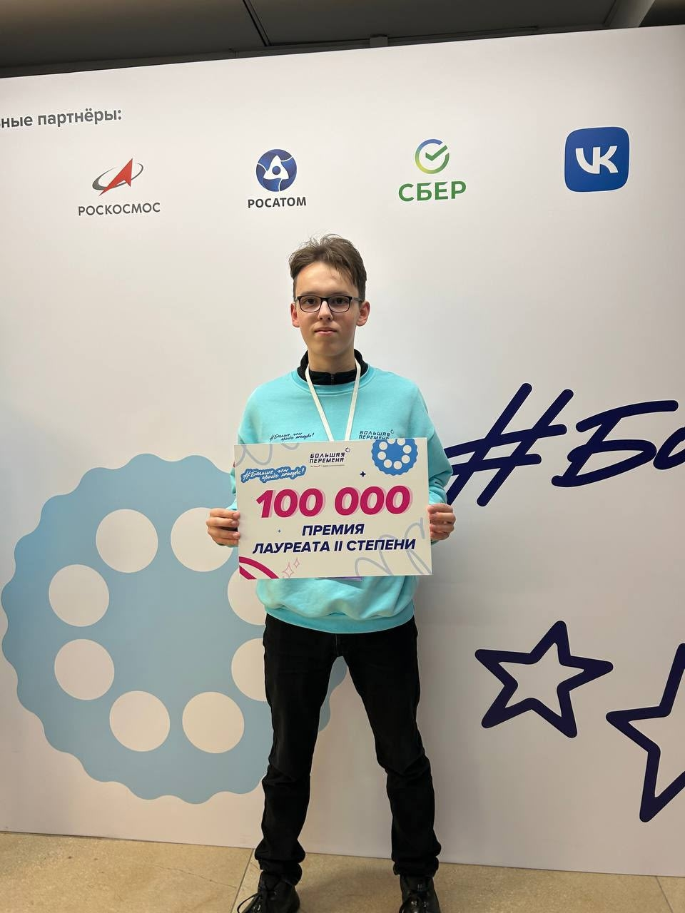
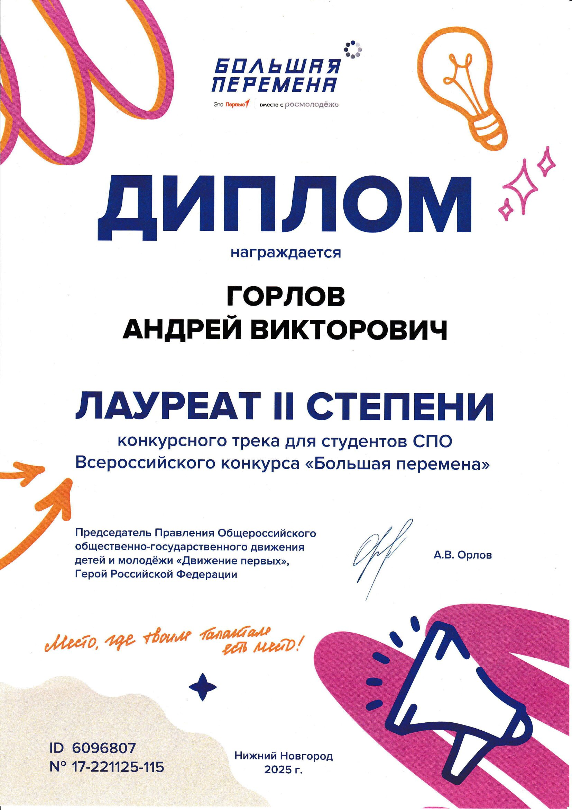
Коммерческий веб-проект в сфере реферального маркетинга, разработанный для частного заказчика, развивающего инфлюенс-маркетинг с использованием реферальной модели продвижения продукции Greenway Global
Сайт реализован как многостраничный каталог с логикой интернет-магазина, ориентированный на повышение конверсии переходов по реферальным ссылкам.
Пользователь может просматривать каталог товаров, искать продукцию по базе данных, изучать подробные описания и видеообзоры. При выборе товара реализован механизм перенаправления на официальный сайт поставщика по индивидуальной реферальной ссылке, привязанной к конкретному продукту и автору.
С моей стороны выполнен полный цикл разработки:
— проектирование архитектуры;
— разработка frontend и backend части;
— реализация системы поиска по базе данных;
— внедрение механики реферальных переходов;
— разработка собственной административной панели.
Административная панель обеспечивает управление товарами, описаниями, медиа-контентом и реферальными ссылками в едином интерфейсе с возможностью редактирования структуры каталога без изменения кода.
Проект внедрён и использовался в реальной коммерческой деятельности. В дальнейшем работа сайта была прекращена в связи с изменением бизнес-модели заказчика.
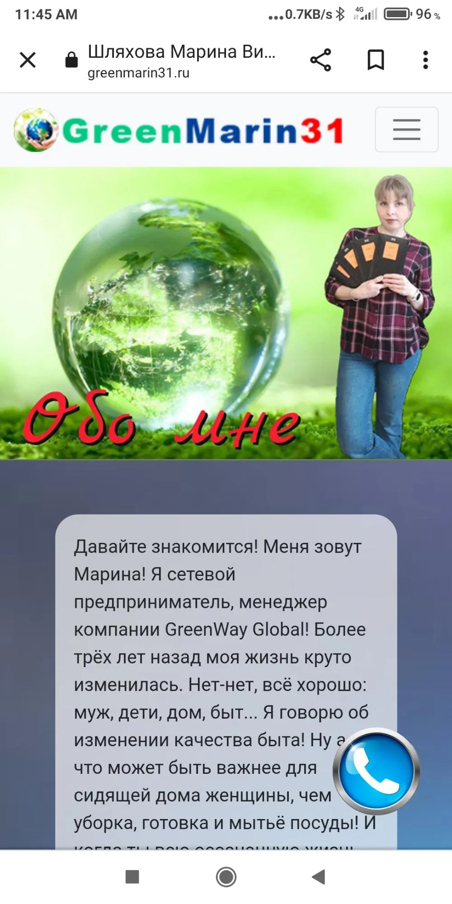
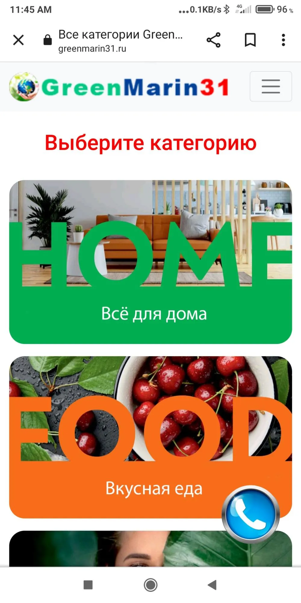
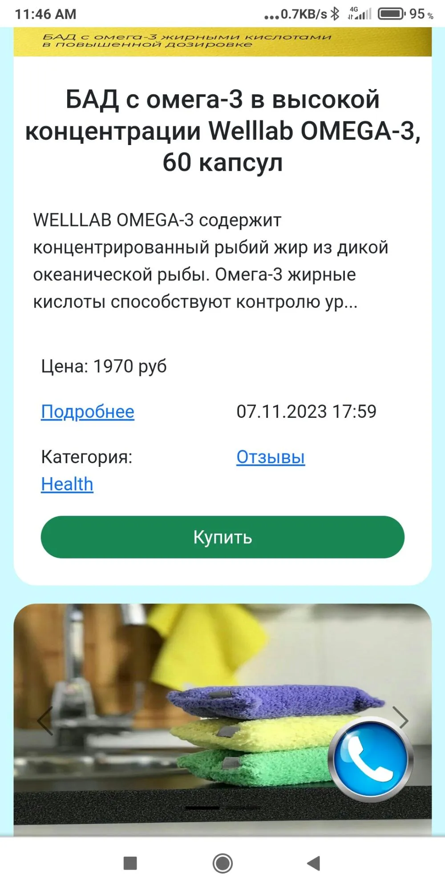
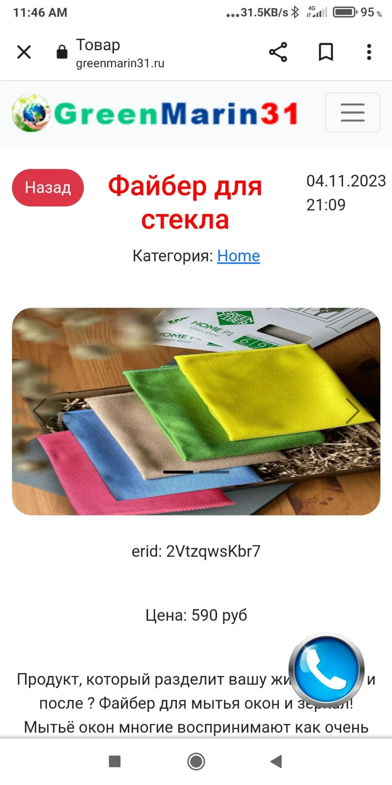
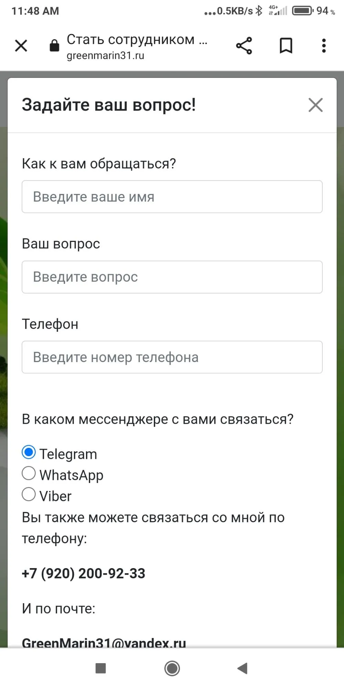
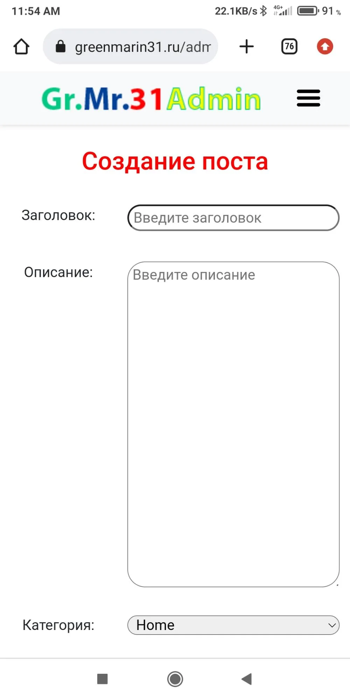
Коммерческий веб-проект в сфере финансовых услуг, разработанный для индивидуального предпринимателя, специализирующегося на сопровождении и оформлении банковских гарантий.
Проект представляет собой одностраничный сайт-визитку, предназначенный для презентации услуг заказчика и повышения конверсии обращений потенциальных клиентов.
Сайт включает структурированную подачу информации о деятельности специалиста, его преимуществах и опыте, этапах работы с клиентами, а также перечне финансовых инструментов, с которыми он работает. Дополнительно были реализованы блоки с кейсами, встроенное видео с контентом заказчика, а также интеграция карты для отображения офиса.
Особое внимание уделяется логике восприятия информации: последовательному раскрытию услуг и упрощению пути пользователя от ознакомления к обращению.
С моей стороны выполнен полный цикл разработки:
— реализация структуры и логики одностраничного сайта;
— верстка интерфейса;
— интеграция мультимедийного контента (видео, карта);
— адаптация под коммерческую задачу заказчика.
Проект внедрён и использовался в реальной коммерческой деятельности. В дальнейшем работа сайта была прекращена в связи с изменением бизнес-модели заказчика.
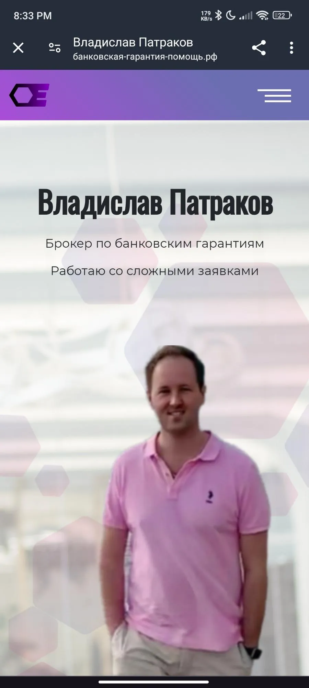
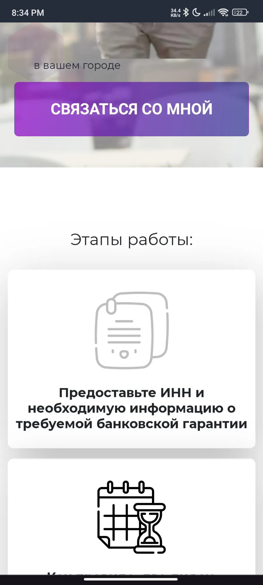
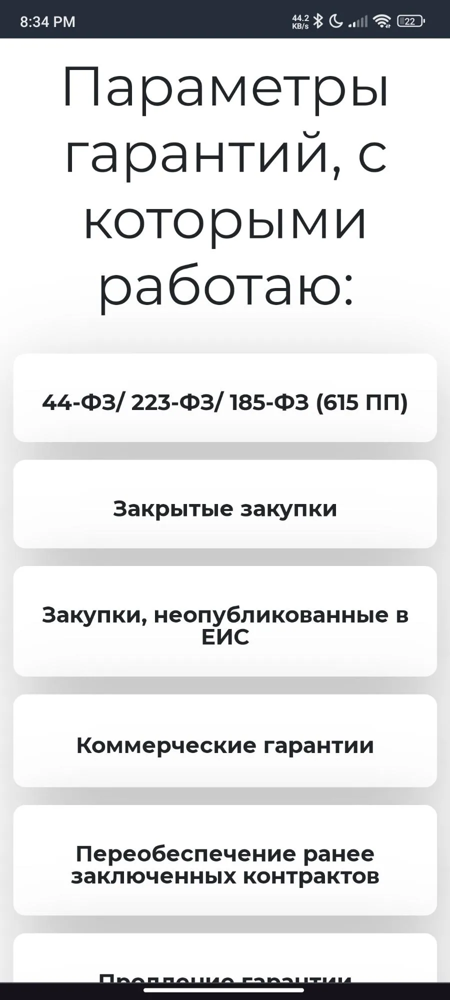
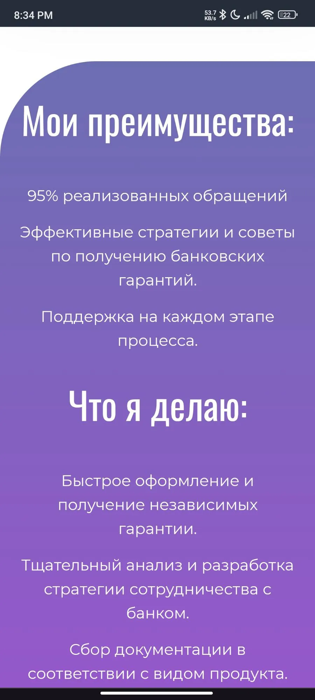
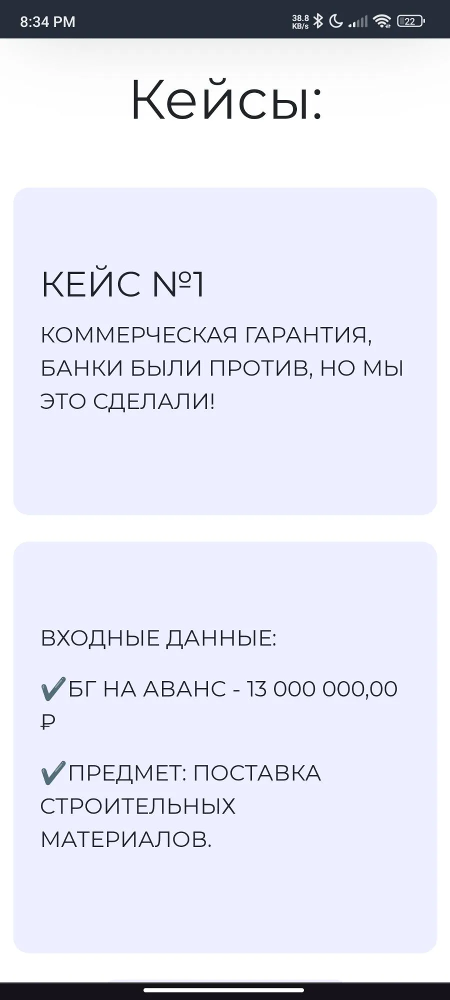
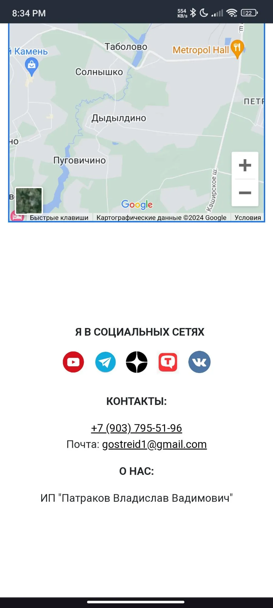
Кроссплатформенное приложение в области повседневной кибербезопасности и утилитарных инструментов, предназначенное для мгновенного сканирования и анализа цифровых объектов. Продукт объединяет инструменты проверки ссылок и кодов с формированием персональной истории действий пользователя.
Основной сценарий использования — быстрое сканирование URL, QR- и штрих-кодов, включая распознавание ссылок через камеру устройства, с последующей оценкой потенциальных рисков с использованием ИИ.
Ключевой функционал:
— сканирование URL (https://…);
— QR- и штрих-коды;
— распознавание ссылок через камеру;
— история сканирований как персональная база данных;
— ИИ-анализ уровня риска перехода;
— минималистичный UX/UI с фокусом на скорость;
— быстрый доступ через виджет и системные панели ОС.
В настоящее время ведётся активная разработка ключевых модулей продукта и подготовка к переходу в стадию MVP. Реализованы базовые прототипы интерфейса и начальная функциональность.
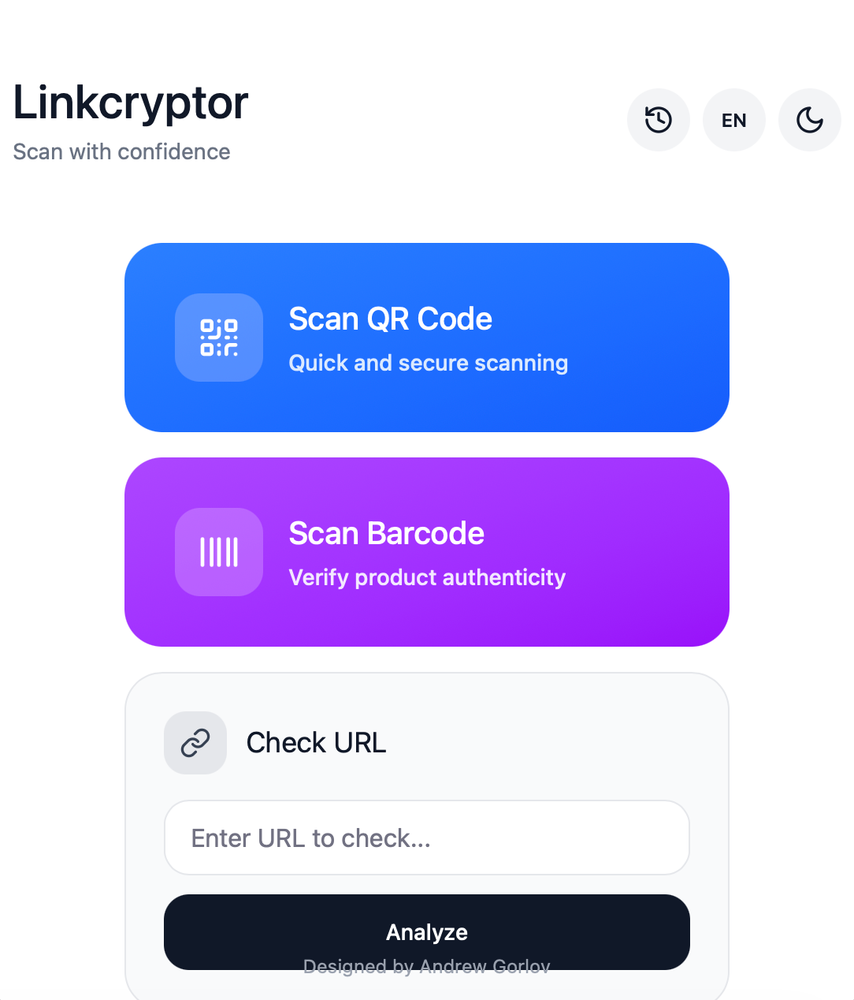
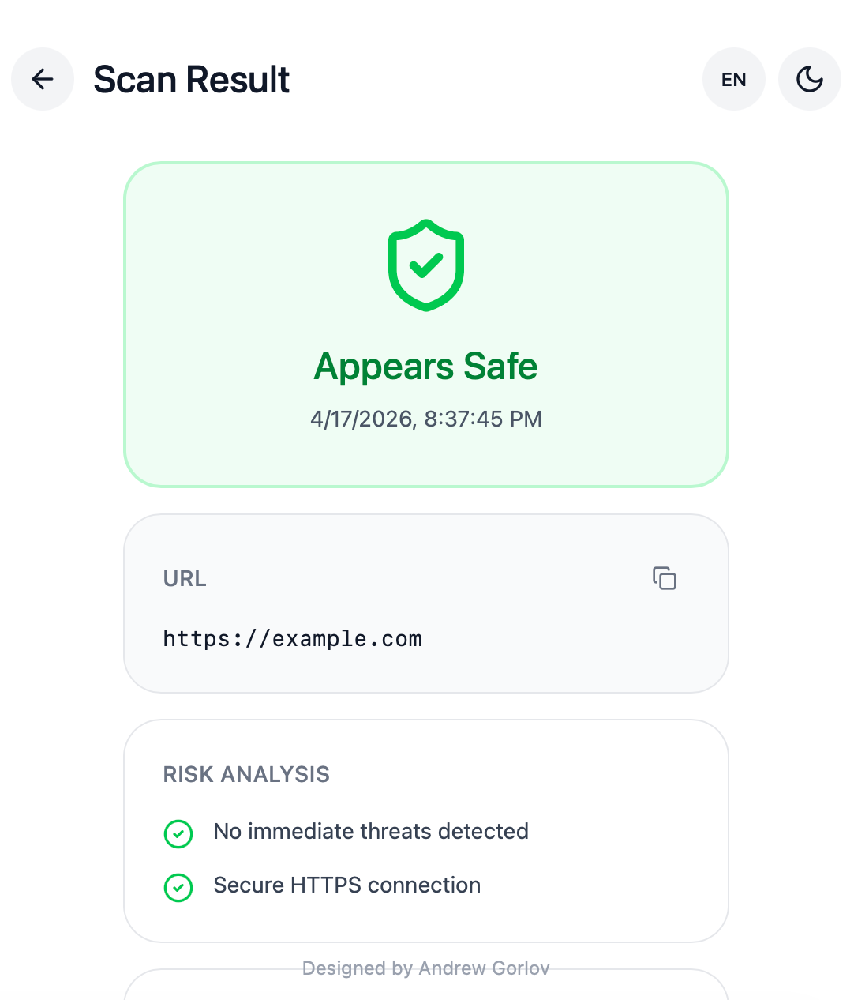
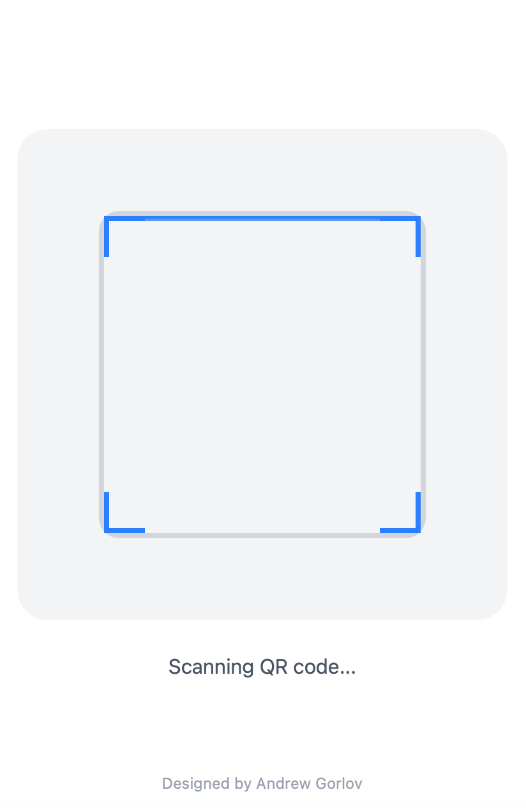
Подтверждение уровня владения английским языком (C1) по результатам EF SET.
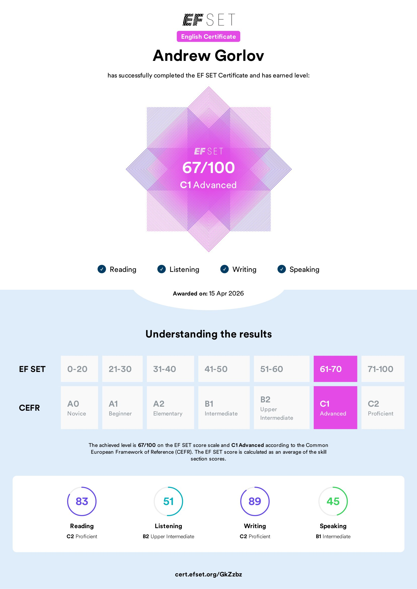